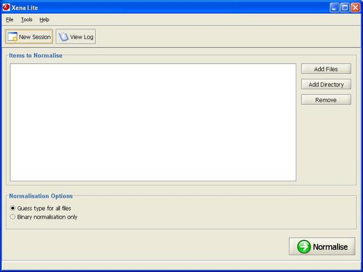
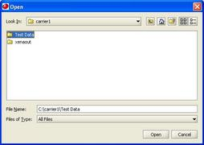
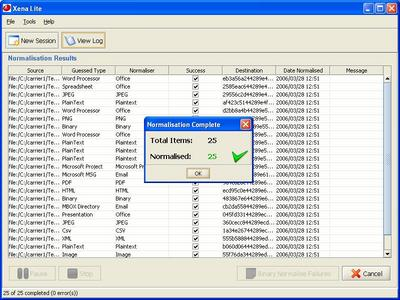

To normalise a complete directory of files, click Add Directory.
Use the file browser to select the directory to be normalised.
Click Normalise
Once processing has completed, the results are presented. Click OK.
The Cancel button may be used after processing to delete the resulting xena files and start again. This might be done if the wrong files were accidentally normalised. The New Session button may be used after processing to continue processing files without altering any processing results.